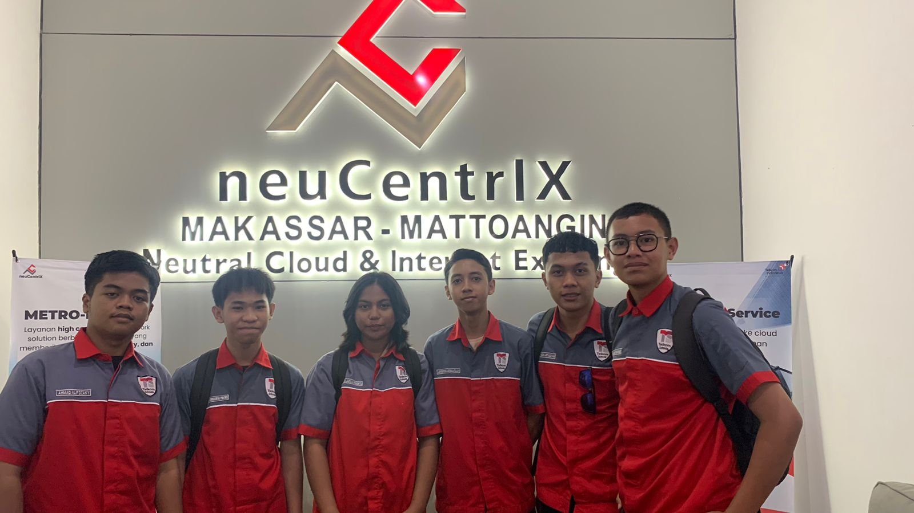
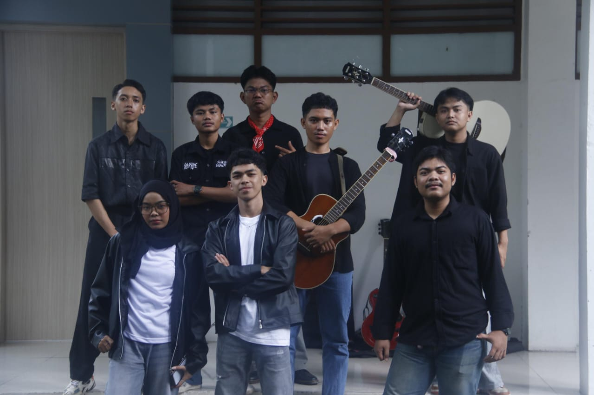

My journey in the world of technology began with a passion for problem solving and creating digital solutions. Over the past few years, I have honed my skills as a Software and Network Engineer starting at SMK Telkom Makassar while delving into the unique challenges of Computer Engineering at Makassar State University. By combining these disciplines, I build applications and digital workflows that bridge engineering principles with modern software. My work spans everything from web and mobile application development to the integration of design and networking platforms such as Cisco, Mikrotik, Firebase, and Arduino. The path I have chosen is not merely about writing code it is about transforming the intersection of humanity and technology and creating solutions that stand the test of time.
2022 - 2024 : Pursued studies in Computer and Network Engineering at SMK Telkom, building a strong foundation in networking, application development, and digital systems.
2024 - 2025 (On Going) : Pursuing Computer Engineering studies at Makassar State University, combining an interest in technology and computers while broadening interdisciplinary horizons.
© 2026 Jefferson Joshua SLay - Pemrograman Web